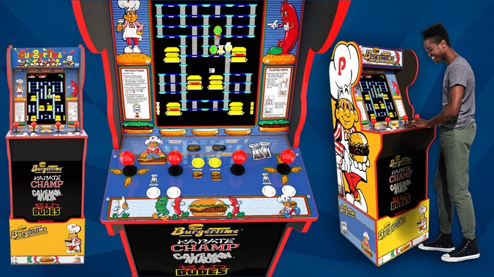

Mar 25
Remastering Old Games for Today's Gaming Venues Like Xbox

Many successful past games have been remastered by game developers and designers like you willing to learn the skill of game development because maybe it is easier than trying to build a whole game idea by yourself. Remember that game design and development is very close to art and art is a tool that gives us the ability to create new things and to make things better on behalf of those who will use it to make the next thing.
By trying to remaster past games you are making the next thing by making something better on behalf of us and we will likely use it like you to make the next things that you also can use and make other things. That’s one of the cycles of creation that is about improving the existing (sustaining innovations) and it is a cycle that could ignite this other cycle that is about making new useful innovative things (disruptive innovations).
if you are afraid about this idea of remastering past games that you liked to play or those that you know that others liked to play then let’s rediscover together past games that were remastered by indie individuals like you and teams of developers because it could give us enough motivations to get started remastering games we like and this will be a very good path for learning this skill of chipping games that are fun.
The first game that I will start with is Mortal Kombat and it is sure that I will not cover all the past games that were remastered because it would be too long to do. I don't know if you did but I used to enjoy the first version of mortal Kombat and probably with this coin machine that I was talking about in this tweet
The most interesting mortal kombat remastering project that I was willing to share with you is a remake made by a solo indie game developer who creatively redeveloped mortal kombat using himself as an actor and a creative process of real motion pictures of himself with the costume play of each character of this great game but I have lost all references to this game remake initiative. But you can watch this official remake of mortal kombat that is covered by this crowdfunded channel about documentaries about game development called noclip.
I was going to be long by narrating some game remake initiatives for the sake of highlighting to you that you have the possibility to take an old game and redevelop it because it is an insightful exercise for both an expert game developer and an aspirant one but I will take a shortcut and point you to this Wikipedia listing of game remakes.
you can cross this list with this list of almost all games that were published in the past and pick the one that you would be eager to remake but if you are interested in new ideas about gaming then I thought that one of my tweets about gaming could help get yo this Idea then I decided to share her with you almost all of them.
List of my tweet about Gaming